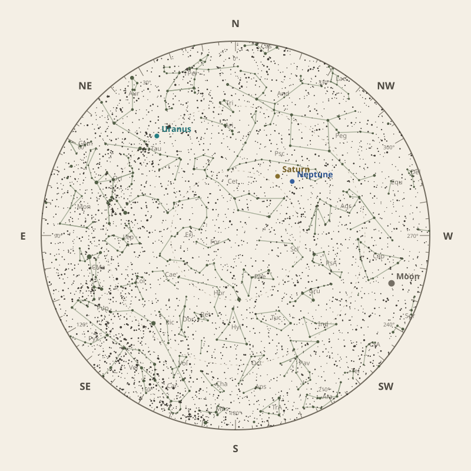

← Annual almanac


North is at the top; east is at the left. Solar System objects shown are above the horizon at 10 pm.
Monthly field almanac
November 2026
Uranus reaches opposition on 25 Nov 2026 and is highest around 11:30 pm.
- New Moon
- 9 Nov Darkest skies
- Full Moon
- 25 Nov Brightest skies
- Best dark window
- 6 Nov 9h 51m
Current conditions
Checking the sky near South East Queensland, Australia…
Sky chart: 15 Nov 2026, 10 pm
South East Queensland, Australia local time.
Show static monthly chart

Night planner
Choose a date to see astronomical darkness, Moon interference, Galactic Centre visibility, and planet altitudes and times.
Best low-Moon dark periods this month
- 6:36 pm–4:27 am9h 51m · 18% Moon
- 6:36 pm–4:26 am9h 50m · 11% Moon
- 6:37 pm–4:26 am9h 48m · 5% Moon
November highlights
- Milky Way
Milky Way core window
1h 50m with 42° altitude.
- Minor planets
4 Vesta
67° altitude; magnitude 6.8.
- Planets
Jupiter
Best monthly date at 46° altitude.
- Occultations
Jupiter lunar occultation
9:57 am to 10:20 am; Moon at 28° altitude for the first listed contact.
- Planetary events
Mercury greatest western elongation
Morning sky; 19.6° from the Sun.


Moon phases
67%
5%
29%
90%
80%
Low illumination favours faint targets. Bright lunar targets are best near full Moon.
Download Moon phase CSV →

Galactic Centre sessions
- 6:32 pm–8:22 pm1h 50m · core to 42°
- 6:32 pm–8:22 pm1h 50m · core to 41°
- 6:33 pm–8:13 pm1h 40m · core to 40°


Planet visibility
Evening
- Neptune28 Nov · 7:30 pm63° · Excellent
- Saturn26 Nov · 8:00 pm62° · Excellent
 Neptune
Neptune Saturn
SaturnOvernight
- Uranus27 Nov · 11:30 pm42° · Good
 Uranus
UranusPredawn
- Jupiter23 Nov · 4:30 am46° · Excellent
- Mars23 Nov · 4:30 am45° · Good
- Venus23 Nov · 4:30 am22° · Fair
- Mercury23 Nov · 4:30 am8° · Poor
 Jupiter
Jupiter Mars
Mars Venus
Venus Mercury
MercuryEvents
- 4 Vesta67° altitude; magnitude 6.8.
- Jupiter lunar occultation9:57 am to 10:20 am; Moon at 28° altitude for the first listed contact.
- Mercury greatest western elongationMorning sky; 19.6° from the Sun.


Data and downloads
Positions are unavailable for 2 comet entries.
Occultation times use a smooth lunar limb; confirm grazing events with IOTA Occult 4.